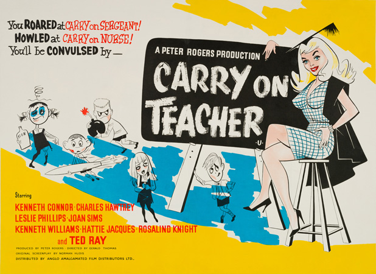
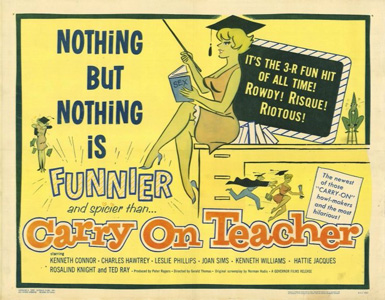
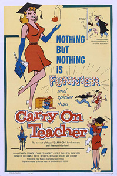

Peter Rogers
During the current term at Maudlin Street Secondary Modern School, William Wakefield (Ted Ray) – who has been at the school for 20 years – is acting headmaster. He spots an advertisement for a headmaster of a brand new school near where he was born and decides to apply for the post.
Because of a coinciding visit by a Ministry of Education Inspector (Miss Wheeler, played by Rosalind Knight) and the noted child psychiatrist Alistair Grigg (Leslie Phillips), he decides to enlist the help of his staff to ensure that the school routine runs smoothly during their visit.
While in conference with his teaching staff [including Gregory Adams (Kenneth Connor), science master; Edwin Milton (Kenneth Williams), English master; Michael Bean (Charles Hawtrey), music teacher; Sarah Allcock (Joan Sims), gym mistress and Grace Short (Hattie Jacques), maths teacher]; a senior pupil (Robin Stevens, played by Richard O'Sullivan) overhears that Wakefield is planning to leave at the end of term. The pupils are fond of the venerable teacher and Stevens immediately rushes this information to his schoolmates. They plan to sabotage every endeavour that might earn Wakefield praise, which would set him on the road to his new post.
On arrival, Grigg and Miss Wheeler are escorted by Wakefield on a tour of inspection and the pupils go out of their way to misbehave in each class they visit. However Grigg's tour has not been in vain: he has taken a shine to Sarah Allcock, the gym mistress and it is obvious the feeling is mutual.
Miss Wheeler is disgusted at the behaviour of the children towards the teachers, but is softened when she visits the science master's class, where she feels an instinctive maternal affection for the charm of the nervous science master, Adams.
Wakefield realises his position as headmaster of the new school is in jeopardy and, on seeing Miss Wheeler’s interest in Adams, enlists his help. He asks Adams to make advances to Miss Wheeler to win her over. Adams is aghast at the thought, but eventually agrees to do his best. After many unsuccessful attempts to tell Miss Wheeler of his love, Adams finds an untruth has become truth and finally finds enough courage to declare his love.
The pupils meanwhile, have been doing everything in their power to make things go wrong, and on the last day of term are caught trying to sabotage the prizegiving. They are told to report to Wakefield’s study and after much cross-examination he learns the reason for the week's events – the pupils simply did not want to see him leave. Wakefield – deeply moved – tells the children he will not leave and will see them all next term.
Miss Wheeler, softened by her newfound love, announces that she intends to tell the Ministry that staff-pupil relationships at the school are excellent.
Filming dates: March 1959.
Interiors: Pinewood Studios, Buckinghamshire.
Exteriors: Drayton Green Primary School, Ealing
During the filming, Charles Hawtrey's mother would often visit the set. While enjoying a cigarette, she accidentally dropped lit ash from the cigarette into her handbag. Joan Sims, who was the first to spot the incident, yelled, "Charlie, Charlie, your mother's bag is on fire!". Charles Hawtrey poured his cup of tea into the bag, snapped it shut, and carried on chatting as if nothing had happened.
Ted Ray was under contract to Associated British (ABC), but wasn't used by them. So they weren't happy when he turned up in another distributors film, especially one as successful as Carry On Teacher. Due to the possibility of the film not getting a release on the ABC cinema circuit, Ted Ray was quietly dropped.
Look out for the young Richard O'Sullivan and Larry Dann. O'Sullivan would go on to star in numerous Thames Television comedies such as Man About The House, whilst Dann would crop up again in Behind, England and Emmannuelle.
The Movie Scene - "A knock-on effect of the humour being more general is that everyone gets their moment to shine and so, whilst there are plenty of familiar faces such as Kenneth Williams, Joan Sims, Charles Hawtrey and Hattie Jacques, none of them are the sole focus of Carry on Teacher. And whilst these "Carry On" regulars all provide plenty of laughs, especially Joan Sims who is marvellous as Miss Allcock, it is also the guests like Leslie Phillips, Rosalind Knight and Ted Ray who deliver just as many laughs. But to add to this you have the school children and watching a young Richard O'Sullivan as Stevens the leader of all this bad behaviour you can't but help enjoy his mischievous scheming. What this all boils down to is that Carry on Teacher like the other earlier "Carry On" movies is great fun and in many ways superior to those more well known "Carry On" movies from the 60s and 70s. Whilst it is slim the actual storyline brings meaning to all the humour and with it being almost innocent in its level of comedy it is simple, good old fashioned fun."

